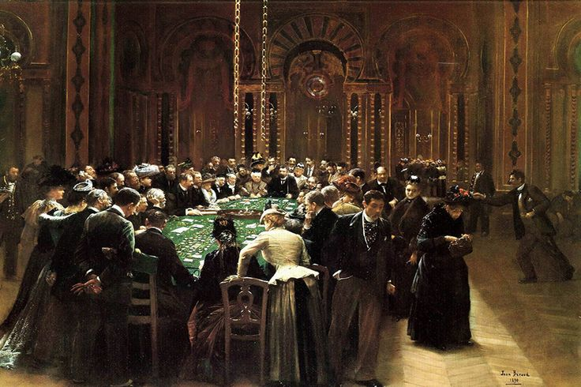

Роман Ф.М. Достоевского "Игрок" был написан в 1866 году и является одним из наиболее известных произведений автора. В нём исследуются темы азартных игр, страсти, человеческой природы и социальных отношений.
Главный герой романа, Алексей Иванович, молодой русский дворянин, находится в курортном городке в Европе, где его жизнь вращается вокруг азартных игр. Он служит гувернёром у семьи генерала Зинаиды Александровны, которая вместе с её пасынком Григорием Алексеевичем и другими персонажами составляет основное окружение Алексея. Генерал, находясь в долгах, надеется на наследство от своей тётки, которая живёт в Германии и должна вскоре приехать. Алексей влюбляется в Полину, падчерицу генерала, которая также испытывает к нему чувства. Однако их отношения осложняются из-за сложной финансовой ситуации и страсти Алексея к азартным играм. Он начинает играть в рулетку, где сначала испытывает удачу, но вскоре теряет всё. Его страсть к игре становится одержимостью, и он теряет контроль над собой. По мере развития сюжета Алексей сталкивается с различными персонажами: игроками, мошенниками и простыми людьми, которые также вовлечены в мир азартных игр. Его жизнь становится всё более хаотичной; он пытается выйти из долгов и вернуть Полину, но азартные игры всё больше затягивают его. Кульминацией романа становится момент, когда Алексей выигрывает крупную сумму денег, но вместо того чтобы использовать выигрыш для улучшения своей жизни и отношений с Полиной, он снова погружается в игру. Это приводит к трагическим последствиям: его жизнь распадается на части, а отношения с Полиной становятся ещё более запутанными.
Грязный, развратный, эгоистичный старик: Он не способен на настоящую любовь, его влечет только физическое удовольствие. Он не уважает своих детей, использует их для удовлетворения собственных эгоистических желаний.
Отец, который не может быть отцом: Фёдор Павлович не заботится о своих детях, он отталкивает их, унижает, не уделяет им внимания. Это одна из причин того, что братья Карамазовы выросли такими разными.
Искуситель и провокатор: Он постоянно искушает своих сыновей, подталкивает их к греху и разврату. Он не просто отрицает веру, а отрицает саму идею божественного начала в человеке.
Стремление к свободе и независимости: Алексей — главный герой романа, молодой человек, который жаждет свободы и независимости. Он стремится вырваться из тисков зависимости от своего дяди и общества.
Зависимость от азартных игр: Аля — азартный игрок, его жизнь вращается вокруг казино. Он часто теряет контроль над собой, что приводит к финансовым и моральным катастрофам.
Чувство вины и саморазрушение: Несмотря на свою страсть к играм, Алексей понимает, что его увлечение разрушает его жизнь и отношения с окружающими. Он испытывает постоянное чувство вины и тоски.
Любовь к Полине: Его чувства к Полине — это единственный светлый момент в его жизни, однако их отношения осложняются его игорной зависимостью.
Женщина с трагической судьбой: Полина — сложный и многослойный персонаж, она является объектом любви Алексея. Её жизнь полна страданий и унижений.
Символ надежды и отчаяния: Полина олицетворяет надежду для Алексея, но в то же время она сама находится в ловушке своих обстоятельств, что делает её образ трагичным.
Взаимоотношения с Фёдором Павловичем: Полина связана с Фёдором Павловичем, что добавляет напряжения в её отношения с Алексеем и служит источником внутреннего конфликта.
Порочный аристократ: Григорий — представитель высшего общества, который использует свою власть и влияние для манипуляций. Он также является азартным игроком.
Моральная амбивалентность: Его характер демонстрирует двойственность: с одной стороны, он привлекателен и харизматичен, с другой — безжалостен и расчетлив.
Конфликт с Алексеем: Григорий становится соперником Алексея в любви к Полине и в игорных делах, что приводит к конфликту между ними.
Представитель старого порядка: Дядя Алексея — консервативный аристократ, который пытается контролировать жизнь племянника и удержать его от азартных игр.
Моральный авторитет: Он является голосом разума и предостерегает Алексея от пагубного влияния игорного мира, хотя сам не всегда придерживается высоких моральных стандартов.
Тиран и манипулятор: Фёдор Павлович — харизматичный, но эгоистичный персонаж, который использует людей для достижения своих целей.
Символ порока: Его действия отражают пороки общества, он является воплощением моральной деградации и безнравственности.
Место искушения: Казино в романе выступает не просто фоном, а отдельным «персонажем», символизирующим искушение, зависимость и разрушение.
Аллегория жизни: Игровой процесс отражает хаос жизни героев, их борьбу за счастье и постоянные неудачи.
